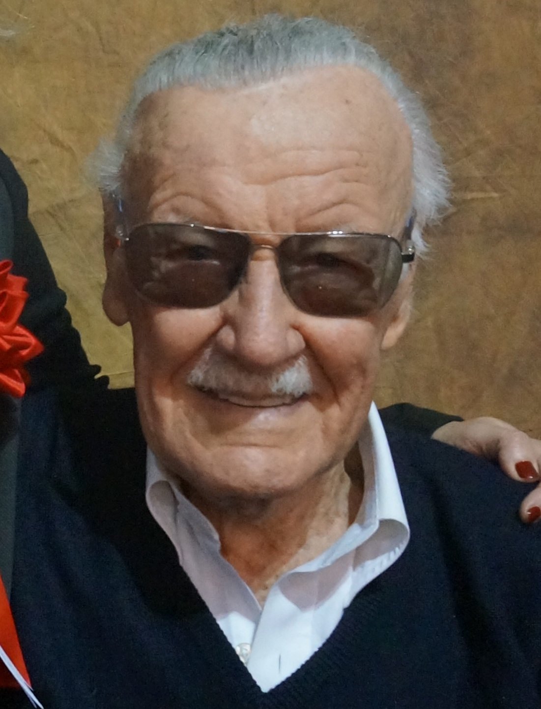
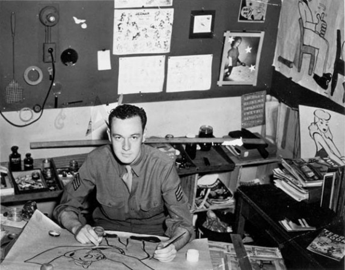
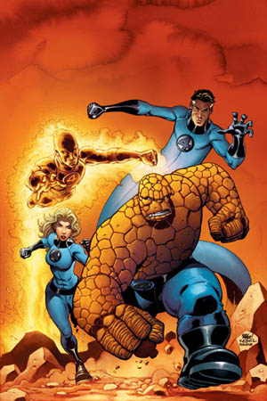
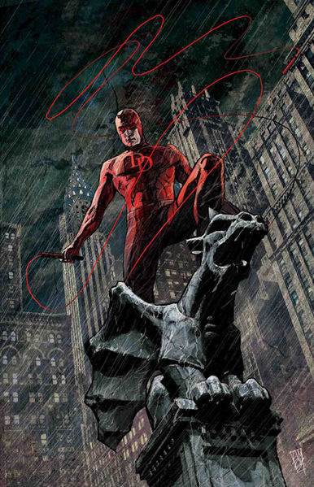
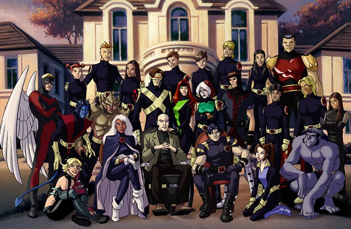
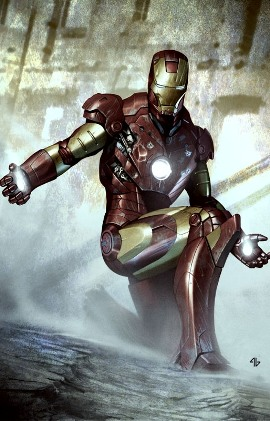

Ли, Стэн

Стэн Ли (англ. Stan Lee; имя при рождении — Стэнли Мартин Либер(англ. Stanley Martin Lieber); 28 декабря 1922, Манхэттен, Нью-Йорк, Нью-Йорк, США — 12 ноября 2018, медицинский центр Седарс-Синай, Лос-Анджелес, Лос-Анджелес, Калифорния, США) — американский писатель, актёр, продюсер, телеведущий, сценарист, редактор и создатель множества персонажей комиксов, бывший президент и председатель совета директоров издательства Marvel Comics. В сотрудничестве с несколькими художниками, в том числе Джеком Кирби и Стивом Дитко, он создал Человека-паука, Халка, Доктора Стрэнджа, Фантастическую четвёрку, Железного человека, Сорвиголову, Тора, Людей Икс и многих других вымышленных персонажей. Ли также известен как актёр кино и телевидения, он снялся во многих фильмах в качестве камео или в ролях второго плана. Является самым кассовым актёром[en] в истории кинематографа по абсолютному показателю выручки (фильмы с его участием принесли создателям свыше $30 миллиардов, сумма продолжает расти).
Биография
Родился и вырос в Нью-Йорке, в семье еврейских иммигрантов из Румынии — Джека (Джейкоба Арона) Либера (1885—1968) и Силии (урождённая Соломон, 1893—1947), на углу 98-й улицы и Вест-Энд авеню Манхэттена. Отец Стэна обучался как закройщик, но работал мало, особенно после великой депрессии, поэтому семья переехала на авеню Форт-Вашингтон. Когда Ли было почти 9 лет, родился его единственный брат, Ларри. К тому времени, как Ли стал подростком, семья стала жить в однокомнатной квартире на 1720 Юниверсити-авеню в Бронксе. Ли c братом жили в одной комнате, а их родители спали рядом на раскладывающемся диване.
Стэн Ли окончил среднюю школу ДеВитта Клинтона в Бронксе, куда до этого переехала его семья. Являясь ненасытным читателем, молодой Стэн работал на многих работах: он занимался написанием некрологов для службы новостей и пресс-релизов по Национальной программе туберкулёзного центра, доставкой сэндвичей в офисы (в том числе и в Рокфеллеровский центр), а также продажей подписок на газету New York Herald Tribune.
Стэн Ли на службе в армии, начало 1940-х
В октябре 1942 года он был призван в армию США, где прослужил в составе Сигнального корпуса до октября 1945 года. Изначально занимался починкой телеграфных столбов и другого оборудования, затем был переведён в отдел учебных фильмов — занимаемая им должность официально называлась «драматург», а основной деятельностью было написание наставлений, сценариев для учебных кинофильмов, слоганов, а также иногда рисование историй в картинках.
В середине 1950-х годов Стэн пробует себя в качестве автора приключенческих рассказов, с началом 1960-х годов он полностью уходит в мир супергеройских комиксов. В сотрудничестве с несколькими художниками (самые известные — Джек Кёрби и Стив Дитко) он создал множество известных персонажей, таких как Человек-паук, Железный человек, Халк, Фантастическая четвёрка и Люди Икс. Совместно с Джоном Бускема является автором книги-самоучителя «How to Draw Comics. The Marvel Way» (первое издание состоялось в 1978 году).
В Нью-Йорке Стэну Ли помогли стать таким известным многие люди, такие как: Робби Соломон (дядя Стэна), редактор Timely Comics Джо Саймон, издатель комиксов Мартин Гудман. Кроме этого, женой Гудмана была Джин — кузина Стэна.
В 1981 году Стэн переезжает в Калифорнию, где останавливается в шикарном особняке в районе West Hollywood. Его главной задачей в этот период жизни становится развитие производства телевизионной продукции для компании Marvel Entertainment.
С 2001 года Стэн Ли начинает создавать собственный телеканал POW! Entertainment, где кроме различных реалити-шоу о человеческих супер-способностях шли эпизоды анимированного сериала для взрослых «Стрипперелла».
Последние годы жизни Ли болел пневмонией и имел проблемы со зрением. В начале 2016 года писатель признался, что он потерял возможность читать и писать из-за значительно ухудшившегося зрения
Смерть
Стэн Ли скончался 12 ноября 2018 года в медицинском центре Седарс-Синай, куда его доставили из дома на «скорой помощи». Причинами смерти Ли были названы остановка сердца, дыхательная и хроническая сердечная недостаточность[27].
17 ноября 2018 года был похоронен во время закрытой церемонии прощания
Комео
Стэн Ли сыграл эпизодические роли во многих фильмах, снятых по мотивам комиксов Marvel Comics. В частности: «Люди Икс», «Люди Икс: Последняя битва», «Человек-паук», «Сорвиголова», «Халк», «Фантастическая четвёрка», фильмы кинематографической вселенной Marvel, а также многие другие. Стэн Ли впервые сыграл самого себя в фильме Кевина Смита «Лоботрясы»: Стэн встречается с одним из главных персонажей по имени Броди (актёр Джейсон Ли) и рассказывает ему историю своей неудавшейся любви, наставляя героя на примирение со своей собственной любовью (актриса Шеннен Доэрти).
Также ему и его комиксам посвящена 16-я серия третьего сезона сериала «Теория Большого взрыва». В конце серии Стэн Ли участвует в сцене с главными героями сериала[29]. Ещё одна роль на телевидении — водитель автобуса в 16-й серии первого сезона сериала «Герои»[30]. Кроме этих ролей, Ли участвовал в создании манги «Heroman»[31].
В качестве персонажа Стэн Ли также появлялся во многих мультфильмах и компьютерных играх. В мультсериале «Человек-паук» в последней серии пятого сезона появляется в параллельном измерении как создатель комиксов про Человека-паука[32][33]. Появлялся в мультсериале «Симпсоны» в роли самого себя[33]. Фигурка Стэна Ли, стоящая возле Железного человека, мелькает в компьютерном 3D-мультфильме «Ральф против интернета» в эпизоде, где на сайте «Oh My Disney» главная героиня убегает от имперских штурмовиков из «Звёздных войн».
Стэна Ли можно заметить в играх Lego Marvel Super Heroes и Lego Marvel Super Heroes 2, Lego Marvel’s Avengers, в которых является играбельным персонажем и обладает смесью способностей таких героев, как Человек-паук, Циклоп, Мистер Фантастик и др.
Созданные персонажи
 Человек паук
Человек паук
фантастическая четверка
сорвиголова
люди икс
железный человек
 халк
халк